Introduction
9beca326-b493-4b0e-b3dc-d7dfb77df3c9
Welcome to the Determining Security Vulnerabilities Practice Lab. In this module, you will be provided with the instructions and devices needed to develop your hands-on skills.
dc640c20-9434-45ea-b7c2-6d4d6a196bfc
Learning Outcomes
In this module, you will complete the following exercises:
- Exercise 1 - Security Concerns and Vulnerabilities
- Exercise 2 - Third-Party Risks
- Exercise 3 - Improper or Weak Patch Management
- Exercise 4 - Impacts
After completing this module, you should be able to:
- Open Ports and Services
- Analyze Hosts on a Network using Microsoft Baseline Security Analyzer
After completing this module, you should have further knowledge of:
- Cloud-based vs. On-premises Vulnerabilities
- Zero-day
- Weak Configurations
- Legacy Platforms
- Vendor Management
- Supply Chain
- Outsourced Code Development
- Data Storage
- Firmware
- Operating System (OS)
- Applications
- Data Loss
- Data Breaches
- Data Exfiltration
- Identity Theft
- Financial
- Reputation
- Availability loss
Exam Objectives
The following exam objectives are covered in this lab:
1.6 Explain the security concerns associated with various types of vulnerabilities.
- Cloud-based Vs. On-premises Vulnerabilities
- Zero-day
- Weak Configurations
- Third-party Risks
- Improper or Weak Patch Management
- Legacy Platforms
- Impacts
Note: Our main
focus is to cover the practical, hands-on aspects of the exam
objectives. We recommend referring to course material or a search engine
to research theoretical topics in more detail.
Lab Duration
It will take approximately 1 hour to complete this lab.
6cde82b4-969e-4ba2-9a1b-b030a82e21d0
Help and Support
For more information on using Practice Labs, please see our Help and Support page. You can also raise a technical support ticket from this page.
Click Next to view the Lab topology used in this module.
d2c53300-f951-45a9-9aa4-3d4ecae69e11
Lab Topology
During your session, you will have access to the following lab configuration.

Depending on the exercises, you may or may not use all
of the devices, but they are shown here in the layout to get an overall
understanding of the topology of the lab.
- PLABDC01 - (Windows Server 2019 - Domain Controller)
- PLABDM01 - (Windows Server 2019 - Domain Member)
- PLABWIN10 - (Windows 10 - Domain Member Workstation)
- PLABKALI - (Kali Linux 2019.4 - Standalone Server)
Click Next to proceed to the first exercise.
<
Home |
README >
CompTIA Security+ Practice Labs
Exercise 1 - Security Concerns and Vulnerabilities
Outside of human error, security flaws and
vulnerabilities are the primary reason for any security breach. For
example, an Internet-facing application with a critical vulnerability is
likely to be explored and exploited by a hacker.
In this exercise, you will learn about different types of security concerns and vulnerabilities.
Learning Outcomes
After completing this exercise, you should be able to:
After completing this exercise, you should have further knowledge of:
- Cloud-based vs. On-premises Vulnerabilities
- Zero-day
- Weak Configurations
- Legacy Platforms
Your Devices
You will be using the following devices in this lab. Please power these on now.
- PLABDC01 - (Windows Server 2019 - Domain Controller)
- PLABWIN10 - (Windows 10 - Domain Member Workstation)
- PLABKALI - (Kali Linux 2019.4 - Standalone Server)
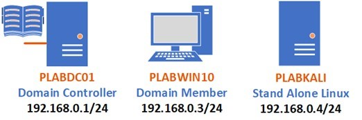
Cloud-based vs. On-premises Vulnerabilities
Fundamentally, a cloud infrastructure is identical to
an on-premise infrastructure except that you do not have physical access
to the machines. The type of security controls that you can implement
in an on-premise data centre, you can implement in the cloud as well.
Over the years, an on-premise infrastructure gets worn
out unless the organization chooses to add new security devices and
applications. There needs to be continuous upgrades made right to the
endpoints, servers, applications, and network devices. Without
continuous upgrades, organizations may have to live with legacy
infrastructure, mostly not supported by vendors. What this means is when
there are vulnerabilities, the organizations cannot patch them as there
is no or little support. This is not the case with cloud services.
There are continuous upgrades that come with the subscription you take.
Because of physical access in on-premise data centres,
there are more chances of unauthorized access to the network or data
centres.
Data privacy may be an issue in the cloud as data is
not in your control. How data is stored is not transparent to the cloud
consumer. You can logically assign access to data, but you cannot
physically control access.
In totality, the cloud service providers tend to keep
their infrastructure updated and focus on minimal or no vulnerabilities.
However, when you set up your network in a cloud environment, it is
your responsibility to keep it updated. Be it the operating systems or
the applications. You need to secure your network.
Zero-day
A zero-day attack exploits an unknown vulnerability
and can only be discovered when new software is deployed. Let’s assume a
scenario; recently, one of your newly deployed applications was
attacked and the attacker was able to gain administrative access. The
antivirus and HIDS deployed on the server hosting the application was
not able to detect any suspicious files or malware. A zero-day attack is
impossible to detect as it exploits unknown vulnerabilities.
A zero-day vulnerability is an example of an unknown
threat. It is not known to an organization, but there is a high
possibility that it may be present in applications that the organization
uses. Unknown threats usually occur because attackers continue to find
new methods to conduct attacks.
Software typically has vulnerabilities, and most
vulnerabilities are known and patched by the software vendor. However,
other vulnerabilities are discovered and then exploited (in most cases)
by different entities, such as security researchers or hackers. The
vulnerabilities are unknown to anyone, including the software vendors,
and can be exploited.
It is important to note that because of the single
reason that the vulnerability is not yet known, a zero-day vulnerability
is difficult to patch.
Hackers typically lookout for unknown vulnerabilities,
and when they find it, they exploit it for certain benefits, such as
unauthorized access to data and systems. Some hackers may ask for a
reward from the software vendor, and if not paid, they may sell it to
other entities or exploit it themselves.
Task 1 - Security Updates E-mail Service
In order to limit the threat of Zero-day exploits, Microsoft runs the Security Updates E-mail Service that
will automatically send e-mails out to subscribers that outline
security updates to Microsoft software. There are many reasons as to why
this is helpful knowledge for a security administrator, although it
also limits the attack surface with Zero-day threats.
In this task, you will learn how to sign up for Security E-mail Update Alerts.
Step 1
Connect to PLABWIN10. You will be presented with the Desktop.
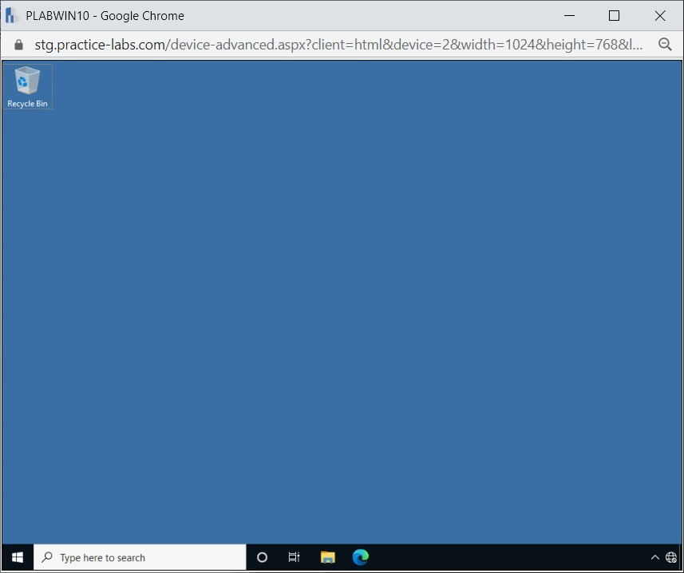Figure 1.1 Screenshot of PLABWIN10: Showing the Desktop.
Step 2
Click Microsoft Edge on the Taskbar.
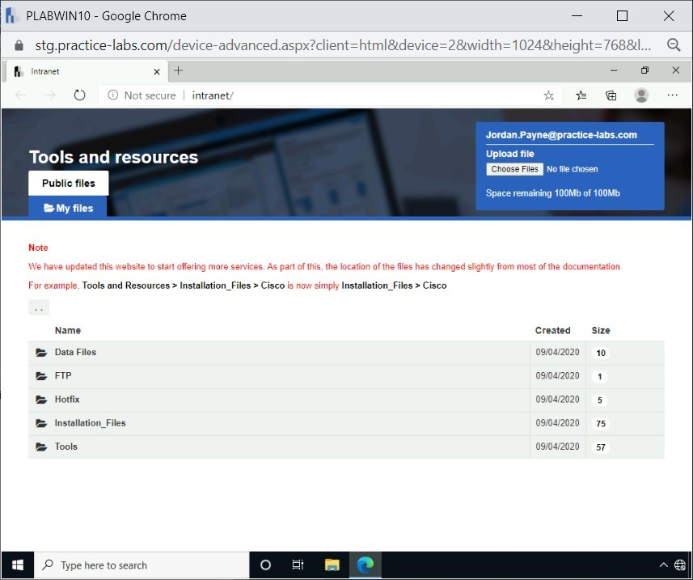Figure 1.2 Screenshot of PLABWIN10: Showing the Practice Labs Intranet inside of Microsoft Edge.
Step 3
In the Navigation Bar, type the following:
https://www.microsoft.com/en-us/msrc/technical-security-notifications
Press Enter.
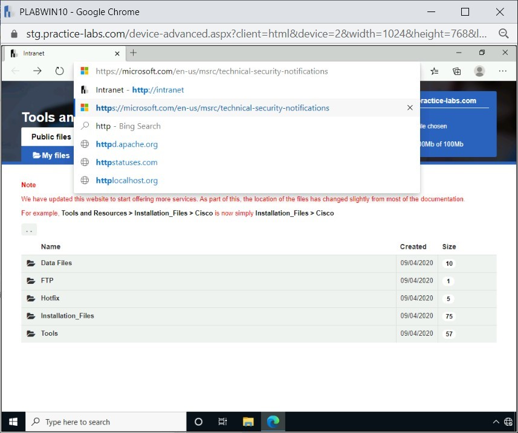Figure
1.3 Screenshot of PLABWIN10: Showing Microsoft Edge, with the Microsoft
Technical Notifications website page typed into the Navigation bar.
Step 4
Here we can see the option to sign up for Security E-mail Update Alerts. Click the Security Notification Service hyperlink.
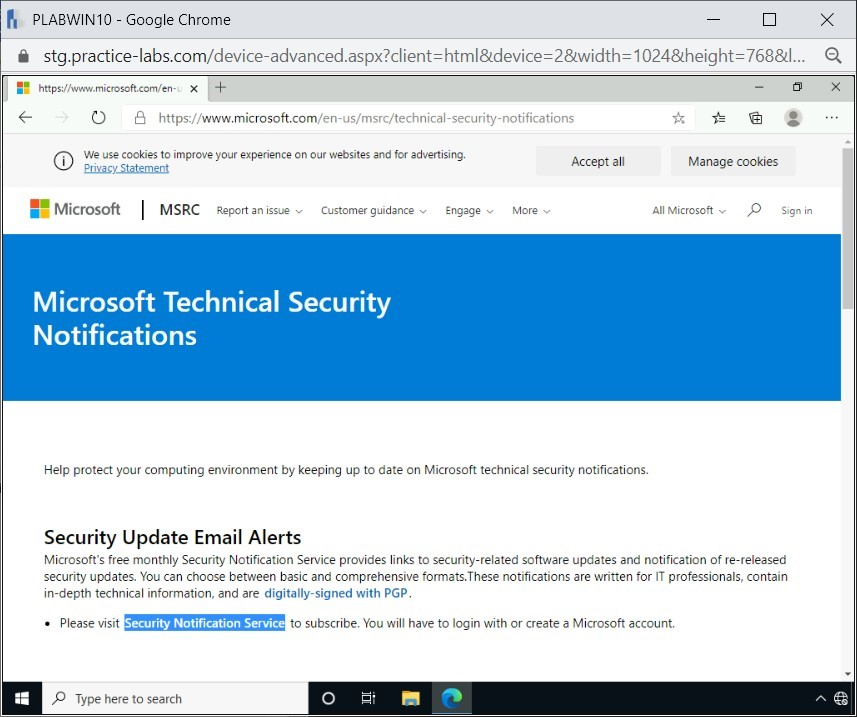Figure
1.4 Screenshot of PLABWIN10: Showing the Microsoft Technical Security
Notifications webpage, with the Security Notification Service hyperlink
highlighted.
Step 5
Here you will be directed to the Microsoft Live Login page.
If you were to login using either a personal or professional E-mail
address, you have the option to sign up for this mailing list.
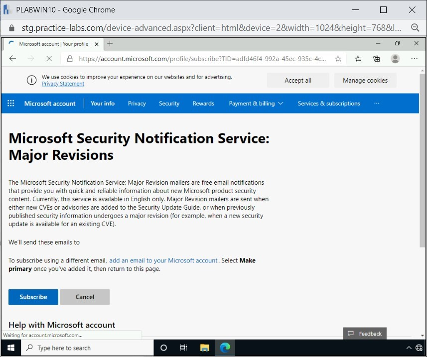Figure 1.5 Screenshot of PLABWIN10: Showing the Microsoft Security Notification Service.
Weak Configurations
There can be several reasons why an operating system,
application, or a network appliance can suffer from a weak
configuration. Often, the vulnerabilities exist in an operating system,
an application, or even a network device due to weak configurations,
which can be of different types. Let’s look at some of the key types of
weak configurations.
Default Settings
Often an administrator would deploy the default
configuration of settings in a system, application, or a network device.
This type of configuration is known as out-of-the-box, which is known
to be weaker than a customized configuration. The vendors of operating
systems, applications, and network devices mostly use minimal security
for the ease of installation. However, it is the responsibility of an
administrator to tweak the security settings to ensure that the
operating system, application, or the network device does not suffer
from weak configurations, which can lead to its compromise.
For example, an administrator may install an operating
system or configure a wireless access point and leave it with the
default configuration. Even though they will be secure by default, the
security will be at a minimal level.
Open Permissions
Whether your data is stored in an on-premises
datacenter or the cloud, you would need to provide restrictive
permissions. However, this does not happen often. Administrators and
users, knowingly or unknowingly, give open permissions. For example,
let’s assume that you have a Linux system on which you have several
confidential files. You simply assign 777 permissions on the file that
contains confidential information. The 777 permissions provide everyone
read, write, and execute permissions. The owner of the file should have
provided only the relevant permissions, such as Read.
Unsecured Root Accounts
Several administrators allow users to have
administrative privileges on a system. For example, a user may simply
log on to a system with the Administrator account. On the other hand,
the root account may be used to log on. Some administrators do not
bother to create user accounts in a Linux system and allow users to use
the root account.
Another reason the root account can be unsecured is by
using a weak password, which can be easily guessed. This is a typical
problem that can exist with any operating system, irrespective of what
type of user accounts are being used. The unsecured root account in a
Linux system is an open invitation for a threat actor to compromise it.
Errors
Errors can be of different types, and there can be
configurational errors in a system, or there can be programming errors.
Configuration errors can occur when you’ve made a change to the hardware
or performed a software upgrade. Suppose an application programmer has
developed an application with errors, such as not including proper
authentication functionality in a code, or incorrect validation of
user’s input. In that case, there is a high chance an attacker will
exploit these vulnerabilities. Any type of error that a system or
application may have will introduce vulnerabilities in a system.
A key attack specifically on web applications is Cross-Site Scripting (XSS),
which is a type of attack where an attacker injects malicious scripts
into vulnerable web applications, thereby causing serious damage to
applications. The malicious script is executed in the victim’s web
browser when they visit an infected page. JavaScript is the most common scripting language used for developing malicious code.
Weak Encryption
Whenever you are sharing or storing data, it is
appropriate to use a strong encryption method. In the past, there have
been various incidents that lead to data compromise due to weak
encryption.
For example, in a wireless network, Wired Equivalent Privacy (WEP)
was initially used with wireless networks, but it can be easily cracked
so it is no longer recommended for use. If you still go ahead and use
it on your wireless network, then someone even with little hacking
skills can break it.
Another example is Wi-Fi Protected Access (WPA), which uses the Temporal Key Integrity Protocol (TKIP) - a 128-bit per-packet key. It will encrypt the network transmissions using TKIP, which was considered a replacement to WEP, but it is vulnerable and weaker than its successor, WPA2.
A protocol providing weak encryption uses an
insufficient length of an encryption key, which can be broken. This was
the case with WEP and WPA.
Unsecure Protocols
Organizations often use unsecured protocols that lead
to several attacks on their infrastructure. Some of the key unsecured
protocols are HTTP, FTP, Telnet, and SNMP.
Let’s take an example of Telnet, which is used to remotely connect to servers and administer them. Telnet sends
clear text communication over the network and Internet, depending on
where you connected with a server. The authentication information is
also sent in cleartext. Someone with a packet capturing tool can capture
and gain access to authentication information.
FTP, HTTP, and SNMP v1 and v2 also
share information in clear text, which makes them equally as prone to
different types of attacks, such as packet capturing or even a Man-in-the-Middle attack.
Legacy Platforms
When an operating system or application completes its
shelf life, it is then succeeded by a newer version. A vendor always
recommends using the latest and newer version of an operating system and
platform for several reasons, such as new features, better support for
newer hardware, and fewer vulnerabilities in most cases.
When an operating system or application goes out of
the market, its vendor stops its support after a specified time.
Consider the example of Windows XP and Windows 7 end of support:
- Windows XP: April 8, 2014
- Windows 7: January 14, 2020
When there is no support after a specified time, this
means that the vendor will also not be rolling out updates or patches
that can cover known vulnerabilities. If there are vulnerabilities found
that do not have patches or updates, then these systems are considered
vulnerable. One vulnerability in such an operating system or application
can impact the entire network.
Task 2 - Open ports and services
The Nmap and Netstat Linux commands enable you to discover open ports on a system . Using the Nmap command, you can perform port scanning of a specific system or more than one system on the network. The Netstat command is a network information tool that can provide information about the network connection, routing tables, and much more.
In this task, you will discover open ports on a system.
Step 1
Ensure that all the required devices are powered on and connect to PLABKALI. In the Enter your username text box, type the following:
root
In the Enter your password text box, type the following:
Passw0rd
Click Log In or press Enter.
 Figure 1.6 Screenshot of PLABKALI: Logging on to Kali Linux.
Figure 1.6 Screenshot of PLABKALI: Logging on to Kali Linux.
Step 2
After a successful login, the desktop is displayed.
 Figure 1.7 Screenshot of PLABKALI: Displaying the desktop after the successful login.
Figure 1.7 Screenshot of PLABKALI: Displaying the desktop after the successful login.
Step 3
On the desktop, right-click and select Open Terminal Here.
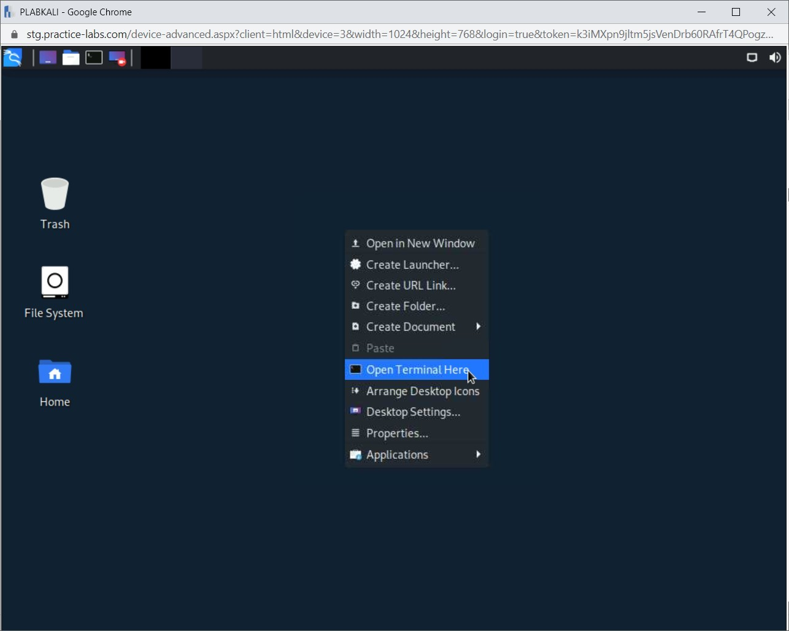Figure 1.8 Screenshot of PLABKALI: Selecting the Open Terminal Here option from the context menu.
Step 4
To show protocol statistics, which is the protocols being used on the local system, type the following information:
netstat -s
Press Enter.
Note: The -s parameter shows the per-protocol statistics. To view the complete details, scroll up in the terminal window.
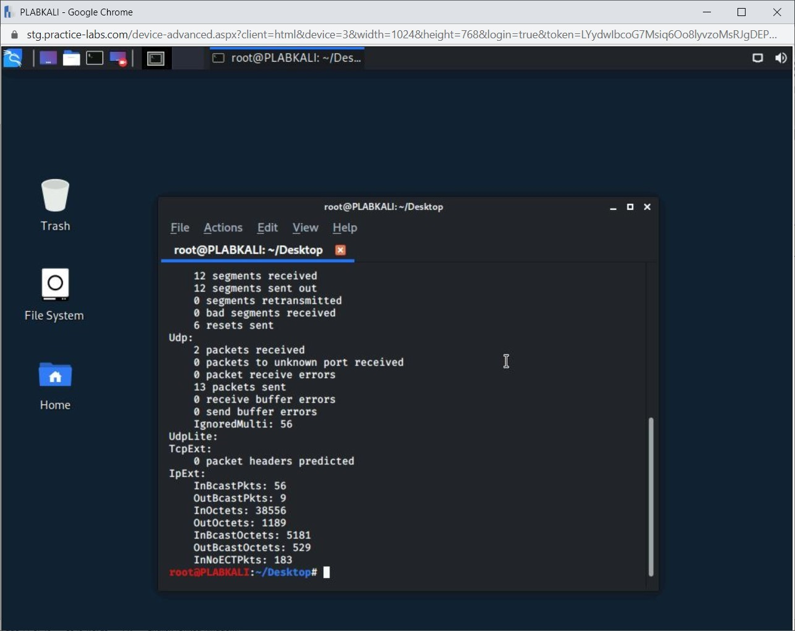Figure 1.9 Screenshot of PLABKALI: Showing the protocol statistics using the netstat command.
Step 5
Clear the screen by entering the following command:
clear
To display the active TCP connections, type the following command:
netstat --tcp -n
Press Enter.
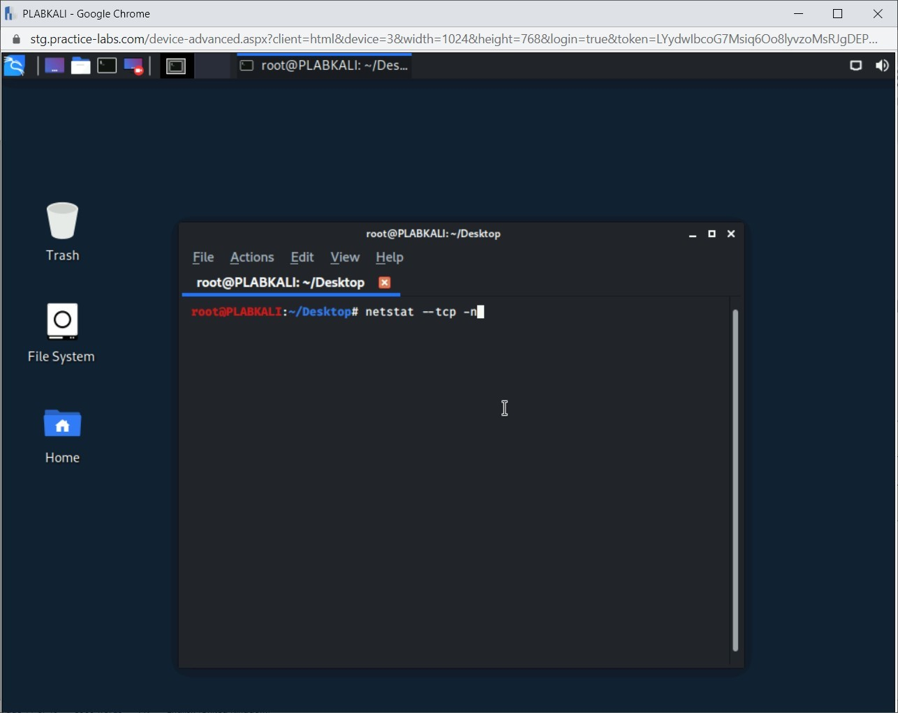Figure 1.10 Screenshot of PLABKALI: Showing the netstat command with the tcp parameter.
Step 6
This command shows connections with the network addresses on the TCP protocol.
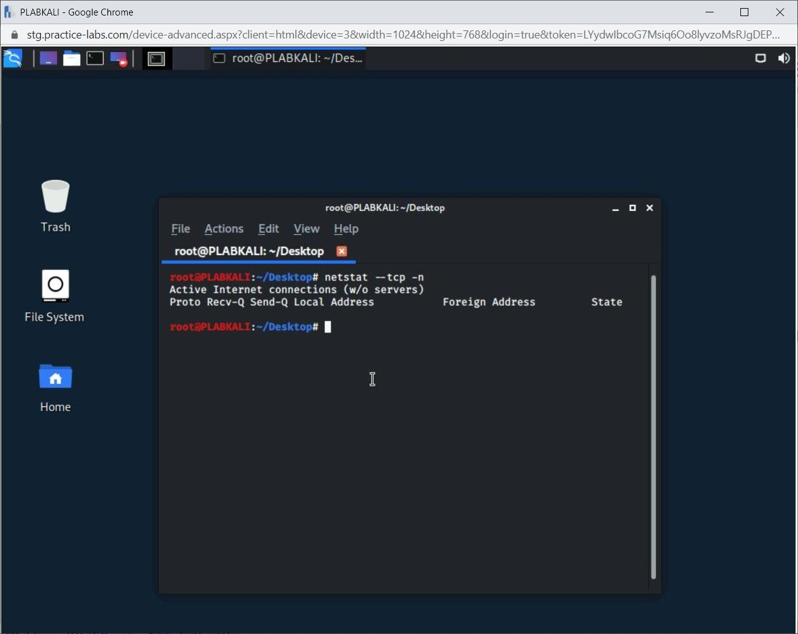Figure 1.11 Screenshot of PLABKALI: Displaying the active TCP connections.
Step 7
Clear the screen by entering the following command:
clear
Let's now use the nmap command. Type the following command:
nmap 192.168.0.1
Press Enter.
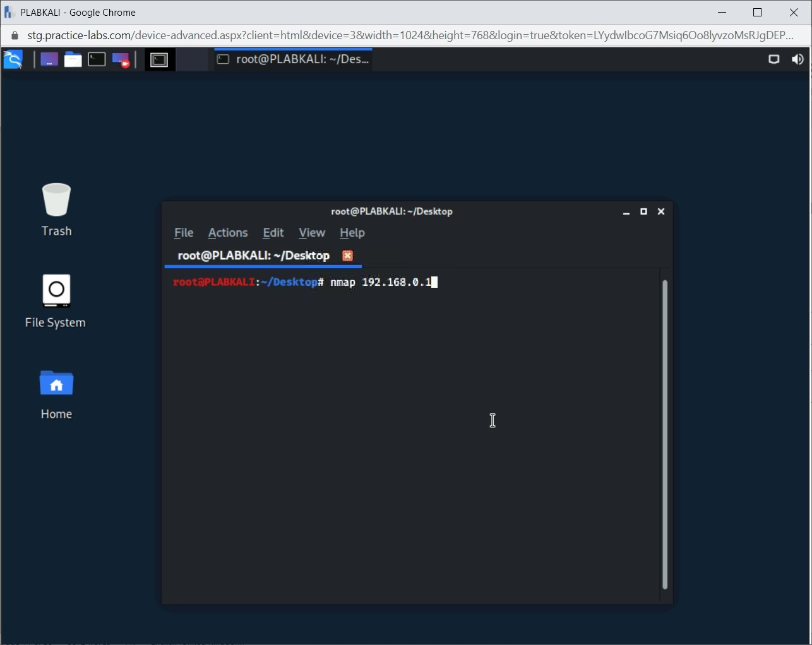Figure 1.12 Screenshot of PLABKALI: Using the nmap command.
Step 8
The results are displayed.
The output shows the open ports with the protocols.
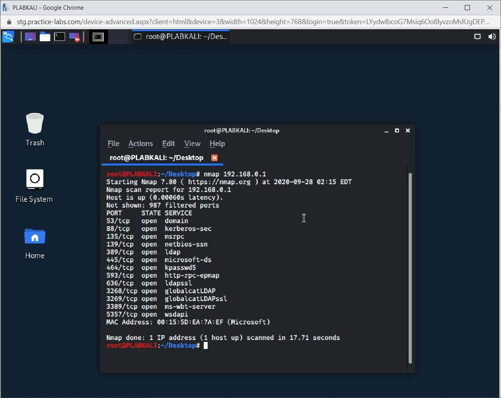Figure 1.13 Screenshot of PLABKALI: Showing the result of the nmap command.
Step 9
Clear the screen by entering the following command:
clear
You can also list the services and their versions
running on a system along with its operating system. To do this, type
the following command:
nmap -sV -O 192.168.0.1
Press Enter.
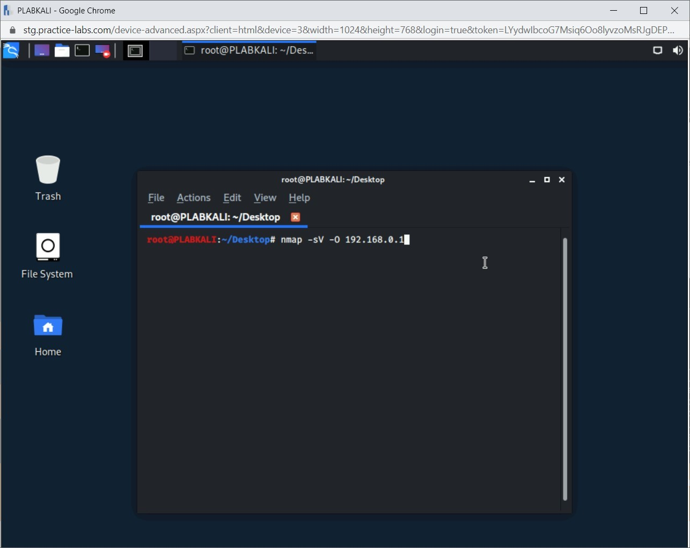Figure
1.14 Screenshot of PLABKALI: Using the nmap command to list the
services and their versions running on a system along with its operating
system.
Step 10
As a result of the command, several running services and the operating system have been detected.
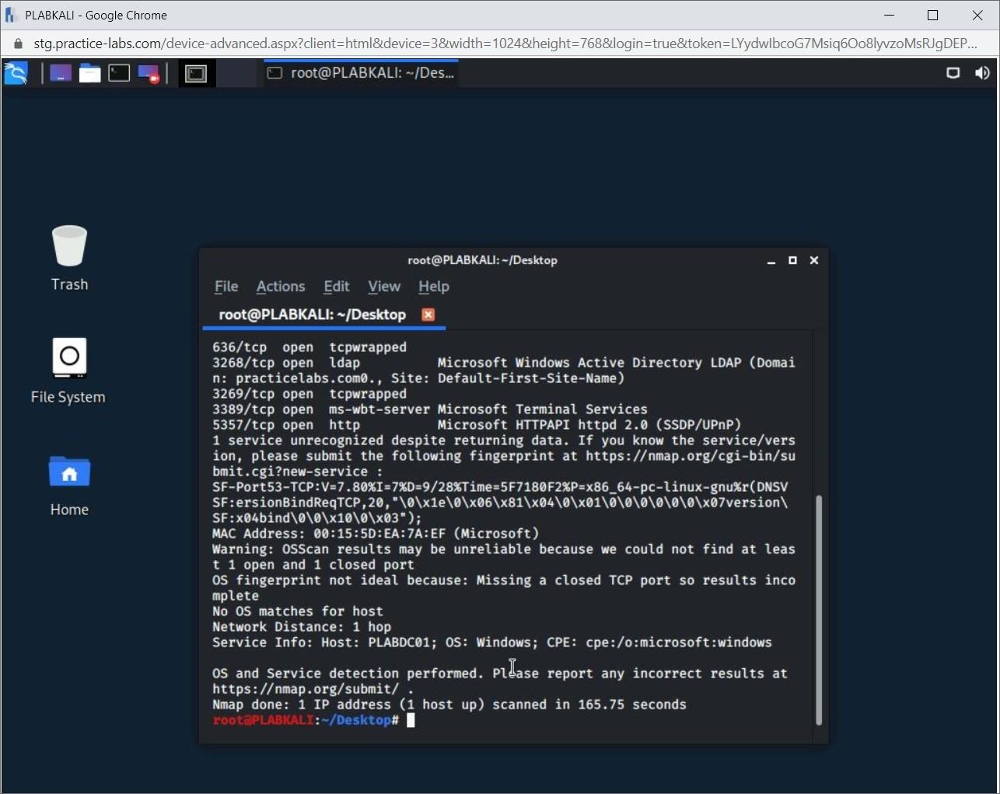Figure 1.15 Screenshot of PLABKALI: Showing the output of the nmap command.
Step 11
Clear the screen by entering the following command:
clear
You can also scan for open ports on several systems at once. To do this, type the following command:
nmap 192.168.0.1-5
Press Enter.
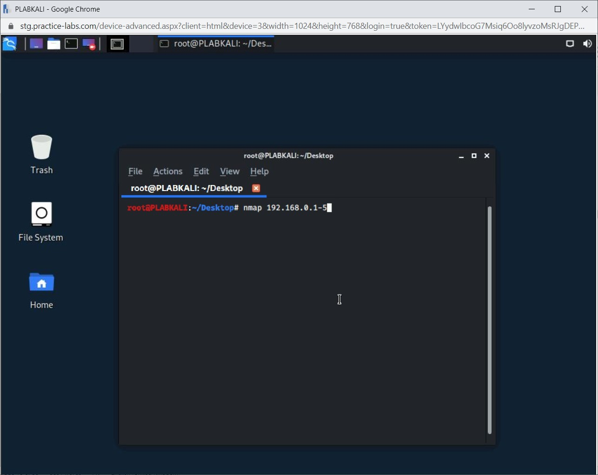Figure 1.16 Screenshot of PLABKALI: Using the nmap command with a range of IP addresses.
Step 12
The command takes a few seconds to run and then displays the output.
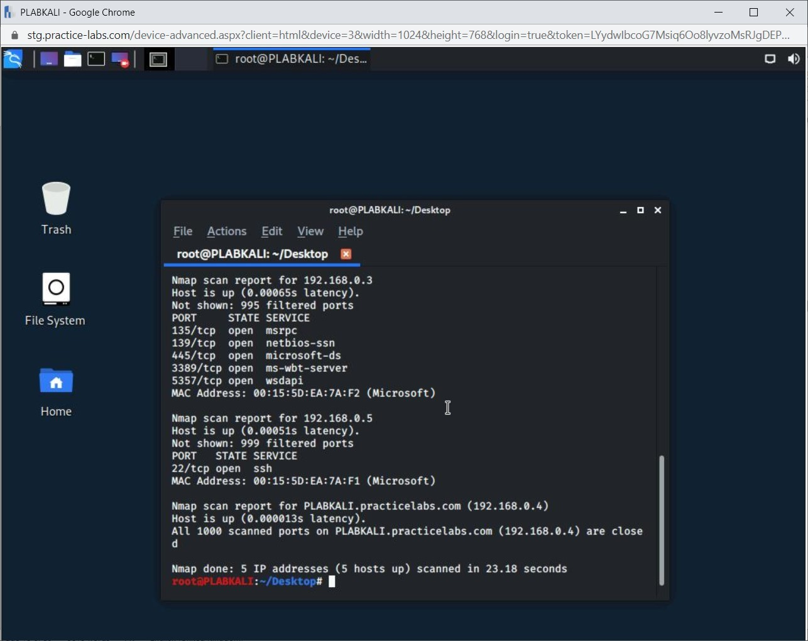Figure 1.17 Screenshot of PLABKALI: Showing the output of the nmap command.
80e3ace3-3818-477e-9d50-9fdfea66eb75
<
Home |
README >
CompTIA Security+ Practice Labs
Exercise 2 - Third-Party Risks
An organization may have a robust infrastructure, but
if they are working with third-parties, security risks can increment
themselves in multi-folds. For example, despite having all security
controls implemented, malware may trigger a third-party communication
channel and creep into a network.
In this exercise, you will learn about third-party risks.
Learning Outcomes
After completing this exercise, you should have further knowledge of:
- Vendor Management
- Supply Chain
- Outsourced Code Development
- Data Storage
Your Devices
This exercise contains supporting materials for Security+.

Vendor Management
Almost all organizations work with one or more
vendors. Along with the security of its network, an organization must
ensure that vendors who are connecting to its network are also secured.
If the vendor does not implement appropriate security controls, it could
lead to the collapse of network security.
Take an example of the Target corporation, the famous
retail chain giant. In November 2013, one of the biggest security
breaches in history took place. The hackers not only got their hands on
110 million credit and debit card numbers, but they also managed to
steal about 11 Gigabytes of data. The attack on Target was not due to
its own mistake but its vendor, Fazio Mechanical, which was a
refrigeration contractor.
It all started with the reconnaissance of Target that
leads to Fazio Mechanical. One of the Fazio employees fell for a
phishing Email, which made an entry point for the Citadel malware. Fazio was not using a full-fledged anti-malware software, and a free version of his software failed to detect Citadel.
After Citadel was activated and its payload
released, it gained the credentials of Fazio Mechanical on one of the
Target’s portals known as Ariba, which was deployed on a server that was
connected with an internal network. It is believed that a vulnerability
was exploited, and then hackers were inside the network to get what
they wanted.
Supply Chain
A supply chain network for an organization may simply
introduce multiple entry points for a hacker. Consider the above-given
example of Target, where Fazio Mechanical was the entry point into
Target’s network. Vendors, in terms of size and financial capacity, are
smaller than the organization in most cases. Therefore, the vendors may
not have a robust and secure infrastructure, which is the focal point
for hackers.
After hackers attack the supply chain vendor, it is
much easier to get into the victim organization’s network than attack it
directly.
Outsourced Code Development
Organizations outsource several types of work. Code
development outsourcing is a common practice. However, just like a
supply chain, the vendors may not have mechanisms and processes to check
code security. Therefore, they may introduce several security
vulnerabilities, such as Cross-site Scripting (XSS) or SQL Injection into their codes.
After the code is written, it needs to be sanitized
and validated, which vendors may choose to skip, not perform it
correctly, or simply ignore. Since the organization will use the code,
the vendor may not be directly impacted, but the organization becomes
vulnerable to several attacks.
Data Storage
With the cloud revolution in recent times,
organizations have started to move their infrastructure out of
on-premise data centers, with applications and storage devices moved to
the cloud. However, the data stored in the cloud or with a third-party
has several security issues.
There is always a concern about data privacy. You can
have strict control and provide limited access to data, but since data
is not residing with you, you do not have control over it. You cannot be
sure if someone at the cloud service provider is looking at your data
or not. Another issue is that the location where your data resides can
also be prone to malware attacks or other issues like outages or storage
failure, although failures are noted to be minimal and well
communicated with larger providers.
Therefore, before you decide to put your data into
someone’s storage, you need to ensure that the data will remain secure.
You also need to be aware of security issues.
7429868b-128c-4069-95a9-7246a6a9e5a3
<
Home |
README >
CompTIA Security+ Practice Labs
Exercise 3 - Improper or Weak Patch Management
Improper or weak patch management can lead to several
security risks. Your organization, if not patching systems properly,
cannot meet certain regulatory compliances, such as ISO 27001, PCI-DSS,
or HIPAA. It could be your internal policies that you have to adhere to.
An organization may also not be able to protect its infrastructure from
cyber-attacks or malware.
In this exercise, you will learn about various types of improper or weak patch management.
Learning Outcomes
After completing this exercise, you should be able to:
- Analyze Hosts on a Network using Microsoft Baseline Security Analyzer
After completing this exercise, you should have further knowledge of:
- Firmware
- Operating System (OS)
- Applications
Your Devices
You will be using the following device in this lab. Please power this on now.
- PLABDC01 - (Windows Server 2019 - Domain Controller)
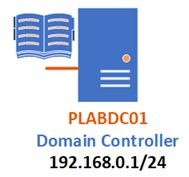
Firmware
Each device has firmware, code that provides
instructions to the hardware. Without this, modern devices would be
impossible to run. Most often, firmware also has vulnerabilities that
are exploited to the extent that a device, such as a cell phone, can be
used and controlled by the attacker. Another possibility is that
existing vulnerabilities in firmware can also be used for privilege
escalations to gain administrative access.
From time to time, as and when there are
vulnerabilities discovered or new features added, vendors provide
updated firmware through their website. Updating firmware not only
improves device functionality but also helps to remove existing
vulnerabilities.
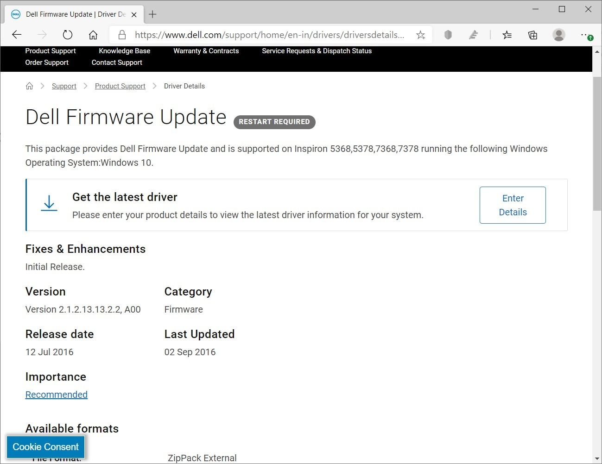Figure 3.1 Screenshot of Dell Website: Showing the availability of the firmware for selected laptop models.
Operating System (OS)
Just like firmware, operating system updates are also
critical. It is a known fact that no application or operating system is
defect-free, and therefore, there is a need for ongoing patches.
Updates, specifically on Windows devices, can be
either be manual or automated. In a manual process, the user has to use
built-in features of Windows 10 to initiate the update. In an automated process, for a single user, Windows Update can be set to automatically download updates. On a network, tools such as the Windows Software Update Service (WSUS) can deploy patches.
A large number of home users ignore updating their operating systems. Each Windows OS has the Windows Update functionality, which automatically detects available updates.
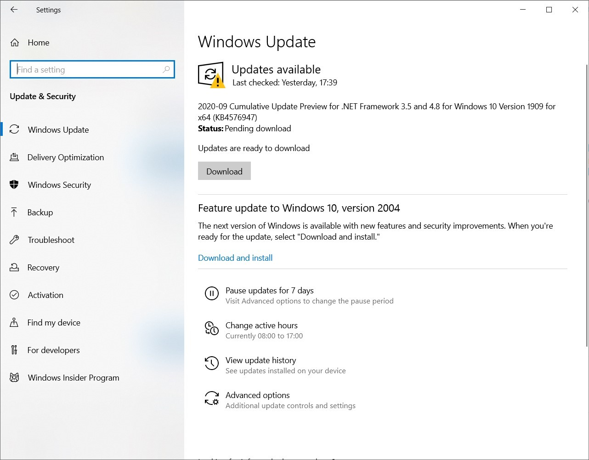Figure 3.2 Screenshot of Windows Update: Showing the availability of updates to be downloaded and installed.
Ignoring updates will leave the vulnerabilities open, which can be exploited. For example, Windows 10 has several known vulnerabilities that need to be patched. Some of the key vulnerabilities are:
- Windows 10 Mount Manager Vulnerability (CVE-2015-1769, MS15-085)
- Microsoft Edge Vulnerabilities (MS15-091)
- Microsoft Graphics Component Vulnerabilities (MS15-080)
- Internet Explorer Vulnerabilities (MS15-079)
- Microsoft Windows Journal Vulnerability (MS15-098)
- Win32k Elevation of Privilege Vulnerability (CVE-2015-0057)
Most of these vulnerabilities, if exploited, are prone
to privilege escalation. Microsoft has released patches for each of
these vulnerabilities. However, it is the user’s responsibility to
deploy them.
Applications
Operating systems may not be directly exposed on the
Internet, but applications are. If there are vulnerabilities that have
not been patched, then they can be in danger. A mistake often made by
administrators is to patch an operating system but not applications. If
an open vulnerability in an application is exploited, it could lead to
various types of attacks, such as privilege escalation on the operating
system.
WSUS does not cover third-party applications,
and therefore, you may have to go with another solution, which can not
only patch the operating system, applications, but a breadth of
applications that your organization is using.
Task 1 - Analyze Hosts on a Network using Microsoft Baseline Security Analyzer
Microsoft Baseline Analyzer (MBSA) is one of
the products you can use in the Windows environment to scan for missing
updates and patches. It is no longer supported on Windows 10 and the latest versions of Windows Server. In this task, Microsoft Baseline Analyzer will analyze hosts on the network to determine if updates need to be applied.
In this task, you will analyze hosts on a network using MBSA.
Step 1
Connect to PLABDC01.
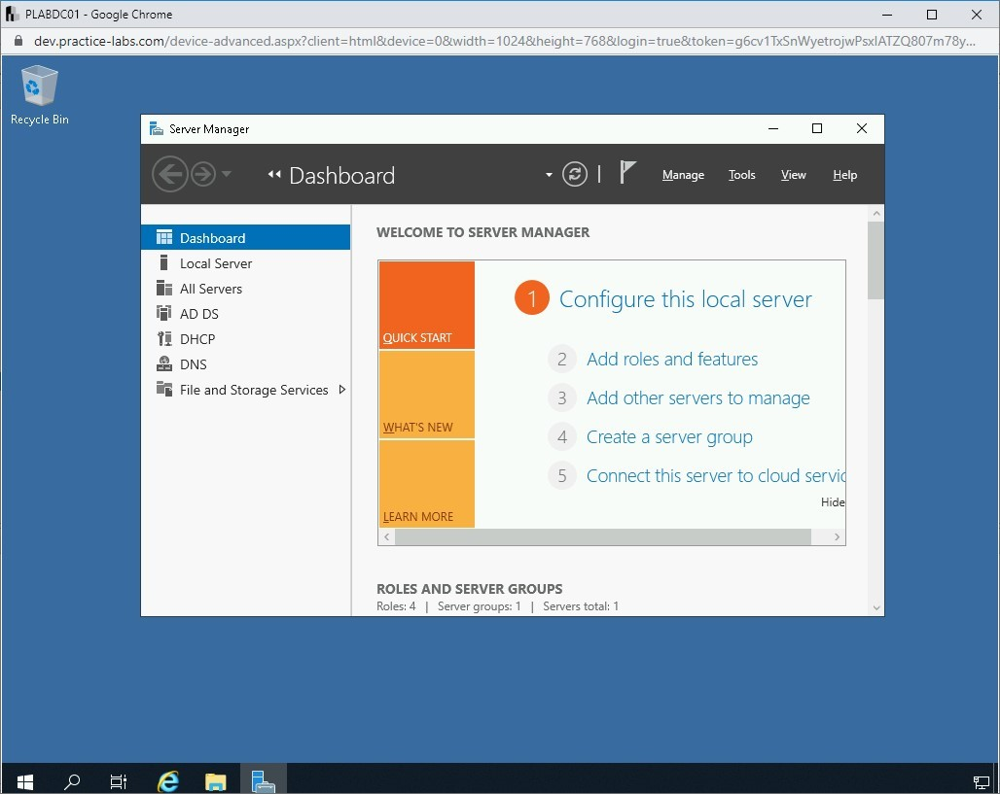Figure 3.3 Screenshot of PLABDC01: Displaying the Desktop along with Server Manager.
Step 2
Click Start and select Microsoft Baseline Security Analyzer 2.3.
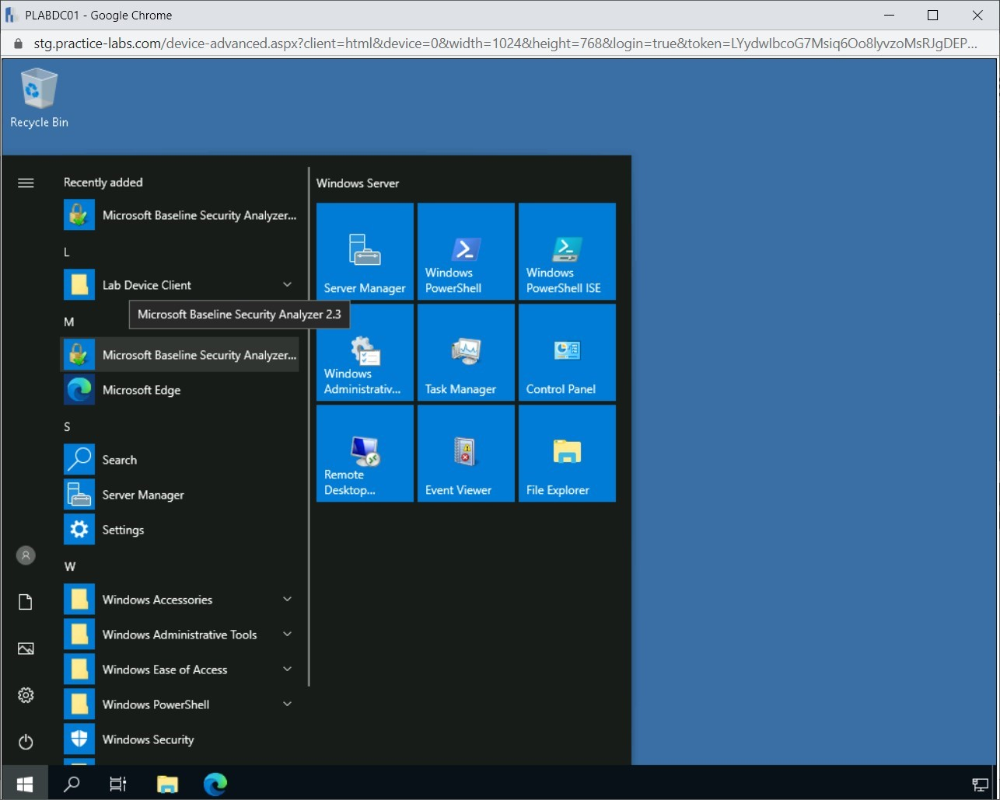Figure 3.4 Screenshot of PLABDC01: Opening Microsoft Baseline Security Analyzer from the Start menu.
Note: Default on
Microsoft operating systems do not install the Microsoft Baseline
Security Analyzer. It can be downloaded from the Internet and installed.
Step 3
Select Scan a computer in the Microsoft Baseline Security Analyzer window.
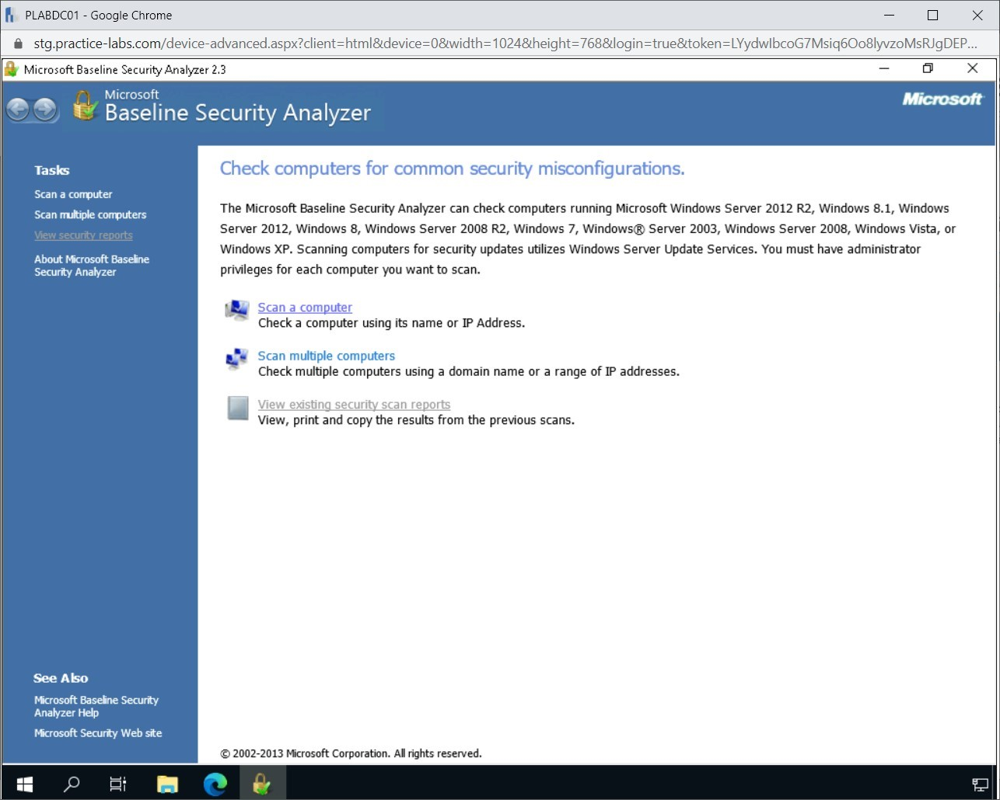Figure 3.5 Screenshot of PLABDC01: Displaying the Microsoft Baseline Security Analyzer application.
Step 4
In the Computer name field, ensure PRACTICELABS\PLABDC01 is selected and click Start Scan.
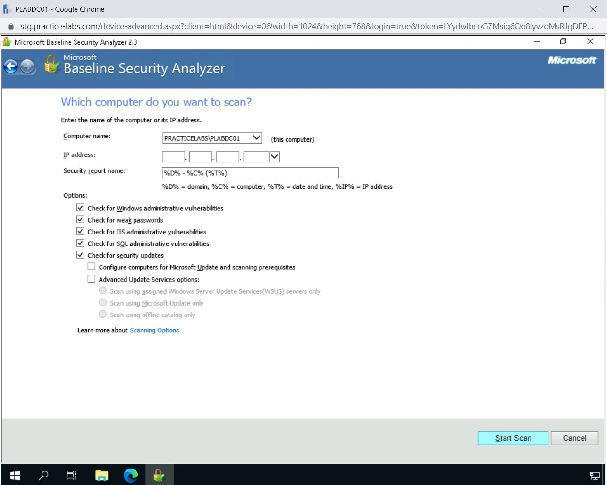Figure 3.6 Screenshot of PLABDC01: Displaying the Microsoft Baseline Security Analyzer application.
Step 5
The scan process starts.
Note: Microsoft
Baseline Security Analyzer will download the latest security updates for
the specific server. The scan may take a couple of minutes to complete.
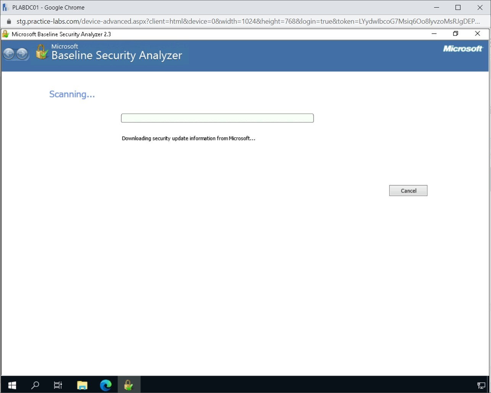Figure 3.7 Screenshot of PLABDC01: Showing the scan process progress.
Step 6
Once the scan has completed, it shows that the Automatic Updates system
service is not running on the host. This means that no updates are
being installed on the host’s operating system. Also, note a CAB error that states that the CAB file could not be downloaded.
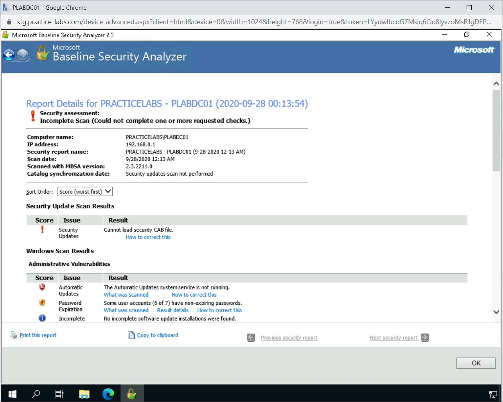Figure 3.8 Screenshot of PLABDC01: Displaying the Microsoft Baseline Security Analyzer.
c5507563-3e73-4ff7-bcbb-c1e8c80814f3
<
Home |
README >
CompTIA Security+ Practice Labs
Exercise 4 - Impacts
There can be several impacts of the attacks on an
individual or an organization. The impacts can be similar in nature, but
the magnitude of the attacks can differ for an organization when you
compare it with an individual.
For example, data loss for an individual can be
devastating. However, its impact on an organization is usually much
larger. The data belonging to an organization has a larger worth than
the data for an individual.
In this exercise, you will learn about the impacts of an attack.
Learning Outcomes
After completing this exercise, you should have further knowledge of:
- Data Loss
- Data Breaches
- Data Exfiltration
- Identity Theft
- Financial
- Reputation
- Availability loss
Your Devices
This exercise contains supporting materials for Security+.

Data Loss
Data Loss occurs when you lose data either by
losing a device, or the storage of a device becomes non-functional or
corrupt. For example, let’s assume you have critical data stored on a
USB drive. While traveling to your office, you lose the USB drive.
Another example can be of a system that contains several gigabytes of
data and its hard drive crashes. You are unable to recover data from the
hard drive, and there is no backup. This is also data loss.
You may forget your removable device such as a
smartphone somewhere, or it may get stolen. Alternatively, removable
media may crash, or a USB drive may stop working after the user
accidentally drops it. In such situations, data loss occurs if you do
not have copies of the data elsewhere.
It is important to note that any type of unintentional or intentional data deletion may also be considered as data loss.
Data theft, on the other hand, occurs when someone
steals your data. This can be done by planting malware on your system
and stealing the data in the background. Data theft can also occur
during data transmission. When you transfer data over an unencrypted
channel, you can face data theft as the hacker can intercept the data.
Data loss can occur due to various reasons. For
example, server failure, human error, or it could be intentional.
Usually, the loss cannot be compensated or recovered. Imagine an
organization that has confidential files that were deleted by a human
error. If there is no backup of the confidential files, the organization
is at significant risk of losing its business.
Data Breaches
A data breach is one of the biggest threats in cloud
computing. In a data breach, confidential, critical, or personal data is
stolen or accessed by an unauthorized entity. Data such as user
credentials, credit card details, social security numbers, and medical
data may be accessed. It can occur with the data stored in the data
center or the cloud servers. Even though cloud service providers
implement security methods to safeguard the data, these methods may not
be enough.
A data breach may occur due to stealing or cracking a
user’s password, exploiting a security flaw, or even exploiting a
misconfiguration in the cloud servers.
Data Exfiltration
Someone owns every piece of data. It could be an
individual or an organization. The person who owns data must permit
someone to copy or transfer the data from one place to another or from
one system to another. However, when data copying, transfer, or even
access to data takes place without the permission of the owner, it is
known as data exfiltration.
Let’s take the example of an organization that has
several confidential documents. If either an insider or an external
entity gains access to these documents from permissions, it is data
exfiltration.
The process of data exfiltration can either be manual
or automated. In a manual process, a threat actor needs to physically
access the system to copy or move the data. In the automated process, it
is typically done using malware.
Identity Theft
Identify theft is a method of using someone’s identity
for a malicious purpose or financial gain. It is a common practice to
provide your identity for various purposes, such as to get a credit card
or to get a passport. However, a threat actor gets access to personal
information, including your name, address, and phone number, although it
could be any information used to identify an individual. Threat actors
could replicate this information to carry out identity theft.
For example, if someone forges your signatures on a
cheque to withdraw cash, it is identity theft. This method of identity
theft has been in practice for decades. In modern times however, you are
most vulnerable to identity theft when you are on the internet, and
identity theft is considered to be one of the most common threats that
exist online. It is a common practice for a threat actor to make a fake
account in the name of your friend to gain access to your personal
information on a social network. Another method is that someone can
simply create an account on your name and order several items for which
you have to pay cash. Zeus is malware that monitors your online
activities, record keystrokes and captures user credentials, which can
then be used for identity theft.
Financial
A security attack can either be on an individual or an
organization. Both can be the target of financial gains for hackers.
For example, you have stored your credit card details on a file on your
system. A hacker, after attacking your system, can access this file.
After getting the credit card information, the hacker can use it on the
Internet. You will end up with financial losses in this scenario.
An organization, after the attack, may lose
confidential and proprietary information. After it is known publicly
that the organization was under attack, it might lose business from
customers, which can be translated as financial losses.
Consider another example of a hacker stealing a new
product design from your organization. The product was unique and was to
be the first one of its kind in the market. After the hacker sells this
design to a competitor, your organization will end up losing the
advantage of being first in the market. Instead, your competitor will
gain this advantage. In the end, you lose business, which can be
considered as financial loss.
Reputation
Often, it is not just an attack on an organization.
The attack has many severe consequences for an organization, such as
reputation loss. Not only has the organization suffered a breach, but it
has also lost its credibility in the market (especially when victim to
the above financial loss vulnerability).
Imagine a scenario in which an organization has its
intellectual property stolen in a security attack. The organization will
not only have a loss of reputation but can also face legal
implications. Therefore, an organization needs to protect its data.
Availability loss
Availability loss way to make the device or data
unavailable for you to use. This can be done through different methods.
It could be someone takes the ownership of your data and denies you
access. It could also be that malware (in this case, known as
ransomware) encrypts your mobile device and makes your data
inaccessible. You have to pay a ransom to get your mobile device
decrypted by the threat actor. Even then, there is no guarantee that
they will decrypt it. An example of this is the WannaCry virus,
which in 2017, infected multiple areas of the UK’s National Health
System, which resulted in a huge loss of confidential data and money.
Availability loss can also be with the applications and servers. For example, if someone launches a Distributed Denial of Service (DDoS)
attack against a webserver, its web applications will eventually be
inaccessible to legit users, which can be classified as availability
loss.
7429868b-128c-4069-95a9-7246a6a9e5a3
d31298f5-3011-4089-bf06-fbf08c44a7f9
Keep all devices that you have powered on in their current state and proceed to the review section.
Review
Well done, you have completed the Determining Security Vulnerabilities Practice Lab.
c6e74811-6d1f-4779-94c2-34fcca239022
b1d46327-7602-469a-afde-f885877c9ed4
fbbec499-1b99-4886-b969-d796a2e84994
66729c40-814b-453d-bd01-77579c889750
0d443b79-717b-43fc-a9f1-58d6164b1445
aaaaaaaa-1111-1111-1111-193f35a24fe3
Summary
You completed the following exercises:
- Exercise 1 - Security Concerns and Vulnerabilities
- Exercise 2 - Third-Party Risks
- Exercise 3 - Improper or Weak Patch Management
- Exercise 4 - Impacts
You should now be able to:
- Open ports and services
- Analyze Hosts on a Network using Microsoft Baseline Security Analyzer
You should now have further knowledge of:
- Cloud-based vs. On-premises Vulnerabilities
- Zero-day
- Weak Configurations
- Legacy Platforms
- Cloud-based vs. On-premises Vulnerabilities
- Vendor Management
- Supply Chain
- Outsourced Code Development
- Data Storage
- Firmware
- Operating System (OS)
- Applications
- Data Loss
- Data Breaches
- Data Exfiltration
- Identity Theft
- Financial
- Reputation
- Availability loss
Feedback
067744a4-4299-4662-b5be-04dbb636a007
Shutdown all virtual machines used in this lab. Alternatively, you can log out of the lab platform.